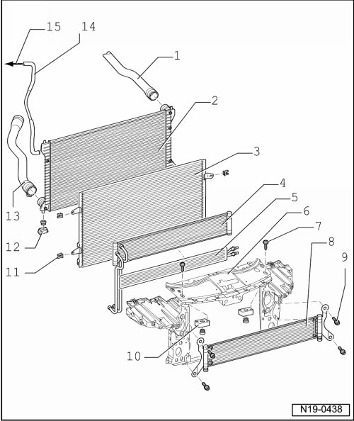

Radiator: Service and Repair
Radiator, Assembly Overview
CAUTION!
Hot steam may escape when opening expansion tank. Wear protective goggles and protective clothing to prevent damage to eyes and scalding. Cover cap with a rag and open carefully.
CAUTION!
When doing any repair work, especially in the engine compartment, pay attention to the following due to clearance issues:
• Route all the various lines (e.g. for fuel, hydraulics, EVAP system, coolant, refrigerant, brake fluid and vacuum lines and hoses) and electrical wiring so that the original positions are restored.
• Ensure sufficient clearance to all moving or hot components.
• Hoses are secured with spring-type clips. In cases of repair only use spring-type clips.
• The spring-type clip pliers (VAS 5024 A) are recommended for installing spring-type clips.

• When installing coolant hoses route stress-free, so that they do not come into contact with other components (observe markings on coolant connection and hose).
Perform leak test of cooling system using cooling system tester (V.A.G 1274) and adapters (V.A.G 1274/8) and (V.A.G 1274/9).

1 Upper coolant hose
• Secured to radiator with a retaining clip
• Ensure seated tightly
2 Radiator
• Removing and installing --> [ Radiator ] Service and Repair.
• If the radiator was replaced, the coolant must be replaced.
3 Condenser
4 Oil cooler
• For transmission oil
5 Oil cooler
• For power steering
6 Lock carrier
7 10 Nm
8 Low-temperature cooler
• For generator and fuel cooling
• Only with certain equipment options
9 10 Nm
10 Rubber bushing
• For lock carrier
11 Retaining clip
• Check for secure seat
12 Rubber bushing
• For bottom of radiator
13 Lower coolant hose
• Secured to radiator with a retaining clip
• Ensure seated tightly
14 Coolant hose
• Secured to top of radiator
• Ensure seated tightly
15 To expansion tank